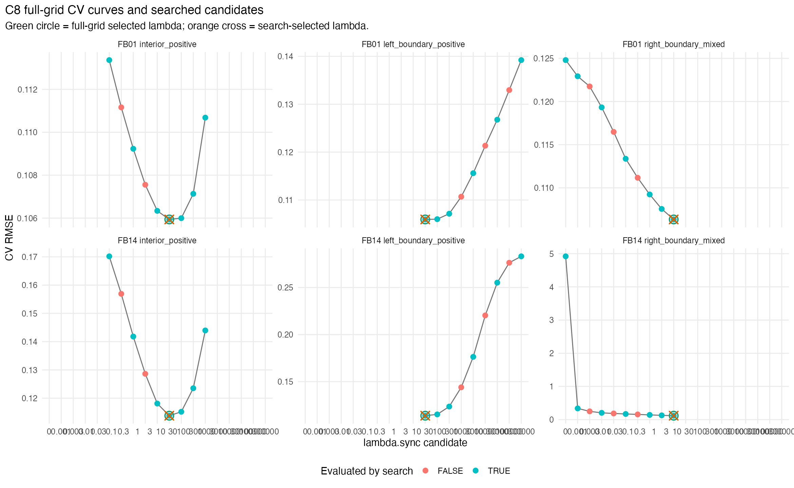
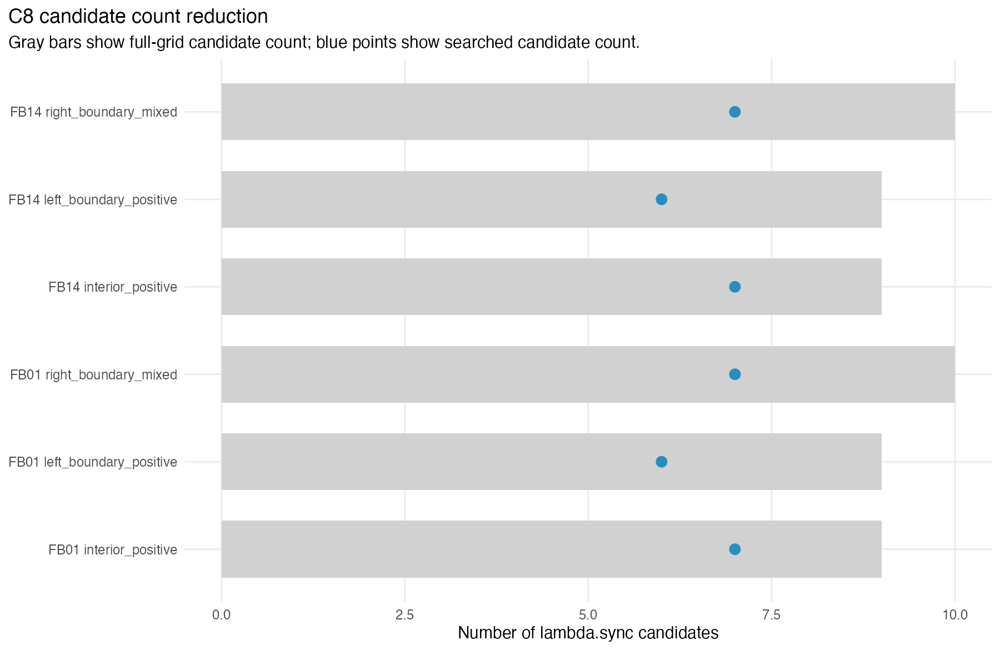
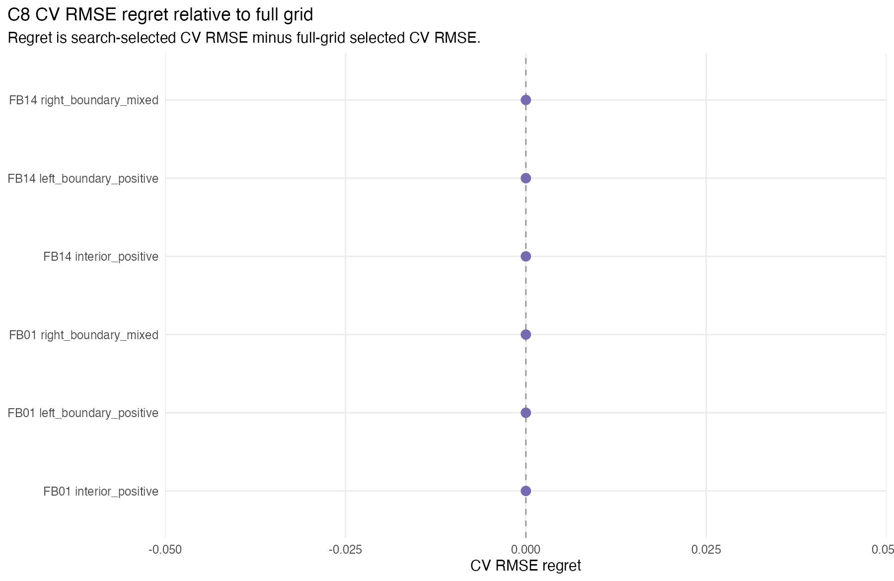

C8 evaluates a guarded coarse-to-refine lambda.sync search policy against full-grid references. The deployable correctness guard is CV RMSE regret: the search-selected CV RMSE minus the full-grid selected CV RMSE. A practical tie rule selects the smallest lambda.sync whose CV RMSE is within 0.2% of the grid minimum.
Across the C8 prototype cases, selected-lambda agreement was complete, maximum CV RMSE regret was 0, and candidate reduction was at least 22.222%. These are prototype results; they validate the search-policy direction but do not yet establish a package default.
| batch_id | dataset_id | chart_dim_rule | layout_id | full_candidate_count | search_candidate_count | candidate_reduction_pct | full_best_position | full_selected_lambda | search_selected_lambda | selected_agree | cv_rmse_regret | cv_rmse_relative_regret | full_total_elapsed_sec | search_total_elapsed_sec | elapsed_speedup |
|---|---|---|---|---|---|---|---|---|---|---|---|---|---|---|---|
| FB01 | LA-D1-RAW-N500 | auto | right_boundary_mixed | 10 | 7 | 30 | right_boundary | 10 | 10 | TRUE | 0 | 0 | 1.828 | 1.281 | 1.427 |
| FB01 | LA-D1-RAW-N500 | auto | interior_positive | 9 | 7 | 22.222 | interior | 30 | 30 | TRUE | 0 | 0 | 1.506 | 1.24 | 1.2145 |
| FB01 | LA-D1-RAW-N500 | auto | left_boundary_positive | 9 | 6 | 33.333 | left_boundary | 30 | 30 | TRUE | 0 | 0 | 1.563 | 1.11 | 1.4081 |
| FB14 | SYN-RANK-BLOCKS-N600-P100 | local.auto | right_boundary_mixed | 10 | 7 | 30 | right_boundary | 10 | 10 | TRUE | 0 | 0 | 19.699 | 13.879 | 1.4193 |
| FB14 | SYN-RANK-BLOCKS-N600-P100 | local.auto | interior_positive | 9 | 7 | 22.222 | interior | 30 | 30 | TRUE | 0 | 0 | 18.919 | 15.278 | 1.2383 |
| FB14 | SYN-RANK-BLOCKS-N600-P100 | local.auto | left_boundary_positive | 9 | 6 | 33.333 | left_boundary | 30 | 30 | TRUE | 0 | 0 | 18.711 | 13.538 | 1.3821 |

Each panel shows the full-grid CV curve. Search-evaluated candidates are highlighted. The green circle marks the full-grid tie-rule selection and the orange cross marks the search selection.

